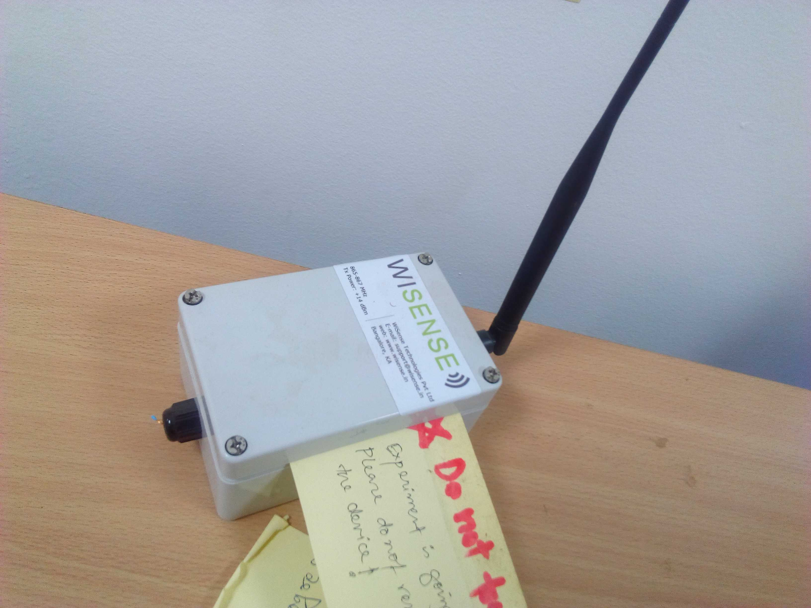
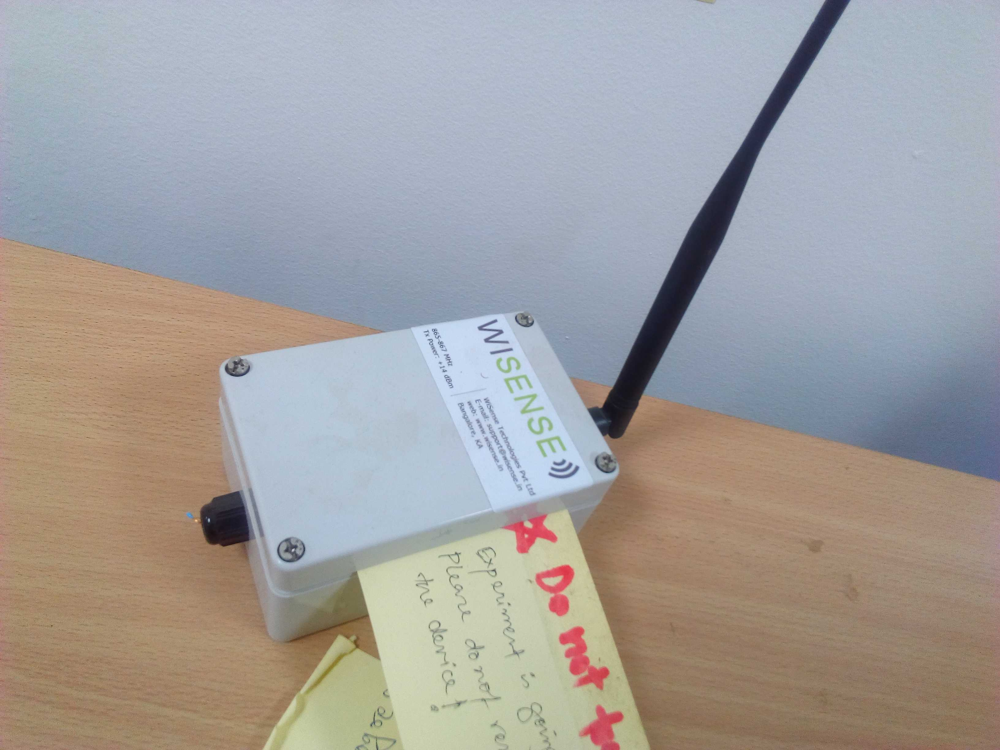

MQTT and Campus-wide heterogeneous Wireless Sensor Network
This project was done by T. Pratik. His project report can be found here.
Goal
Build a wireless sensor network (WSN) for environment monitoring with different hardwares that can communicate with each other using MQTT protocol.
Getting started
For this project, we used the following hardware and software
| Hardware | Software |
| Raspberry Pi Model 3B(built-in WiFi) – 1 no | Arduino IDE |
| NodeMCU (built-in WIFi ESP-12e) – 2 nos | Waspmote IDE |
| Arduino Nano with WiFi(ESP8266) – 2 nos | Python |
| Waspmotes with XBee S1(IEEE-802.15.4) – 2 nos | XCTU |
| WiSense buit-in CC2520(ZigBee,IEEE-802.15.4) – 2 nos | Mosquitto |
A quick introduction of MQTT
MQTT (MQ Telemetry Transport or Message Queue Telemetry Transport) is a publish-subscribe-based lightweight messaging protocol for use on top of the TCP/IP protocol
MQTT defines methods (sometimes referred to as verbs) to indicate the desired action to be performed on the identified resource. What this resource represents, whether pre-existing data or data that is generated dynamically, depends on the implementation of the server. Often, the resource corresponds to a file or the output of an executable residing on the server
Connect: Waits for a connection to be established with the server.
Disconnect: Waits for the MQTT client to finish any work it must do, and for the TCP/IP session to disconnect.
Subscribe: Waits for completion of the Subscribe or UnSubscribe method.
UnSubscribe: Requests the server unsubscribe the client from one or more topics.
Publish: Returns immediately to the application thread after passing the request to the MQTT client.
MQTT is a device to device communication protocol using publish-subscribe model, consists of two main parts Broker and Clients. The Broker hosts an MQTT server and a Client may be a sensor or an actuator .
A client containing data publishes to the broker under a topic name, and a client interested in the data subscribes to the same topic name to get the data.
Raspberry Pi as MQTT broker (server)
A raspberry-Pi(Rpi) is a microprocessor embedded prototyping device. It has many versions, in this project we have used Rpi-3 which is powered by a 1.2GHz ARM Cortex A5 processor, has 1GB RAM, has inbuilt Bluetooth & WiFi, 4 USB ports and it can run a variety of operating systems including Windows and Linux. Hence, it can be considered as a small computer. We installed Raspbian Jessie, which is a flavour of Linux.
A Raspberry-pi was made the broker by installing mosquitto broker, which is a open source MQTT broker mainly used for research purpose. The broker always runs in the background and is started automatically on startup.
Waspmotes as MQTT client
As mentioned earlier the waspmotes were sending data to the coordinator, the coordinator was attached to the Raspberry-pi and through serial communication, the data sent by the nodes were read.
A python MQTT-forwarder script was written, which read the incoming packets and forwarded them to the broker under respective topic names.
To transmit the data from the Waspmotes, first we need to run the waspmoteXBeeconfig.pde script. Once the configuration is done WaspMoteXbeedatasending.pde need to be executed in the Waspmotes. Waspmote codes were jointly written by T. Pratik and G. K. Sriharsha.
NOTE:
While configuring XBee network, panID should match the one coded in the coordinator through XCTU.
If you are using external XBee boards, then you may need an XBee breakout board (also known as explorer).
Arduino nano + ESP8266 as MQTT client
For implementing MQTT with Arduino we chose Arduino Nano due to its small size and less power consumption, in comparsion to Arduino UNO. For connectivity we attached ESP8266 to them for WiFi capability. Using PubSubClient library which is a light weight MQTT library for Arduino, the Arduinos were able to directly publish their data to the broker in SenML format, and the were able to publish their data from anywhere within the campus wherever IITMandiWiFi was available, and a node kept at IITMandi South campus can also publish data to the broker kept at IITMandi North campus.
Additional instructions related to this code:
Connect the ESP8266 as shown in the photo
SSID and password should be checked.
Sleep time can be changed by modifying the ‘‘sleeptime" variable.
Inside reconnect() function for the client.connect() function, we need to specify unique client id. For this code it is set as NaNo_01.
Provide the address of the broker in the IPAddress server() function.
The following libraries were used in this code:
#include <WiFiEsp.h> #include <WiFiEspClient.h> #include <WiFiEspUdp.h> #include "SoftwareSerial.h" #include <PubSubClient.h> #include "LowPower.h" #include<ArduinoJson.h> #include"DHT.h"
The first four libraries enables the nano to establish a WiFi connection through ESP. SofwareSerial.h is required for the connection between nano and ESP board. PubsubClient.h is for MQTT. LowPower is for sleep mode. ArduinoJson.h for creating as well as parsing data in JSON format.
The following line publishes the data to the broker. Also, true ensures that the packet will be retained by the broker. It basically ensures that the broker should keep this packet under this topic name till a new packet under this topic name has arrived.
client.publish(“IITMandi/COMLab/Nano01/temperature”,pl,true)
NOTE: that donot connect ESP8266 directly to the Arduino nanos as they operate on different voltage levels (3.3V vs 5V). To avoid any damage either use voltage regular circuit or a breakout board.
NODE-MCU as MQTT client
Just to add a variety ,two NODE-MCUs were also programmed to publish their data to the broker. They can also publish their data from anywhere within thw campus wherever IITMandiWiFi is available.
The code can be found here. The code is similar to the one that is written for Arduino nanos with external ESP boards. However, the implementation of sleep mode is different as the NodeMCU is directly connected to the ESP8266 and therefore implement ESP.deepSleep( ) function included in
#include<ESP8266WiFi.h>
Arduino nano + Xbee S2 as MQTT client
An arduino Nano along with an XBee S2 radio running 802.15.4 firmware, was programmed with proper configuration to add it to the network of Waspmotes, since it also sent sensor data to the same coordinator to which Waspmote node were sending, it can be said that the Arduino is also now a part of the Waspmote network, hence we achieved interoperability with devices manufactured from multiple manufacturers.
First, the XBee radio was configured with XCTU to set the Channel number, Network PanID ,API mode and Endpoint point, then it was directly attached to the arduino for serial communication using Arduino XBee library.
Configuring external XBee module :
XCTU need to be installed (available in the digi website). Need to configure so that it can read from serial port. Details can be found in this link
Follow the link to download and perform chmod and then run it.
Useful youtube links regarding XCTU.
WiSense nodes as MQTT client
AS there was no MQTT library for the WiSense nodes, similar to Waspmotes, a forwarder script was used to post the data received from WiSense nodes.
 

Implementing sleep modes
Since the waspmotes are industrial grade sensor nodes , so they have inbuilt codes for implementing the best suited sleepmode for optimal use, hence we just included those codes to implement sleepmodes in them.
The Arduino Nano has a variety of sleep modes to choose from, each having its own advantages and limitations, so we chose the deep-sleep mode, to achieve maximum power saving, since in this mode everything is turned off and the device can only comeout of sleep mode either by external reset or watchdog timer interrupt .
The Node-MCUs also have deep sleep modes similar to Arduinos, for them also deep sleep mode was chosen and they automatically turn their WiFi radio off when in sleep mode .
The nodes implement a cycle in which, they read the sensor values, publish it, go to sleep, wake-up and continue.
NOTE: The Arduinos along with ESP8266 radios, donot save much power mainly due to the power LED which is always on .So in order to take full advantage of sleep mode, it is advisable to get rid of them by desoldering.
Integration, Experimental evaluation and Result
The network consists of a central broker(Raspberry-Pi) and 8 clients (final network didn't haveS Arduino nano + Xbee client).
2 Waspmotes and WiSense nodes transmit data to their respective coordinator which later get published in to the broker with the help of a forwarder script. 2 Arduino Nano with ESP-8266 WiFi radios and 2 Node-MCUs publish directly to the broker.
Each of their payload consists of SenML-JSON format, as following :
{*‘bn’:‘location/name of node’;‘e’:[‘n’:‘parameter name’,‘u’ :‘Parameter unit’,‘v’:‘value’]}
from which topic name can be extracted as : String(value(bn) + value(parameter))
NOTE: Currently substitute IITMandi/COMLab in place of location
By installing MQTT client software mosquitto (we tested with paho mqtt client), connecting to the Broker and subscribing to this topic will give you the live readings of the sensors.
The above readings are of a client which has subscribed to every topic on the broker. This is done using IITMandi/COMlab/# .
How to subscribe to the MQTT broker?
Once you have installed mosquitto client, you can type the following command to subscribe to the broker
$ mosquitto_sub -h <host ip> -t <topic id>/ wildcards+
where valid wild cards are #, +
Remotely Enabling/Disabling sensors
One of the NodeMCUs was programmed to demonstrate remote enabling/disabling of sensors.
It subscribes to the topic settings, which contains instructions to enable or disable a sensor ,which is published by the administrator.
We could not achieve this whilst implementing sleep mode, and the reason for this is not clear, but it is suspected that due to the inability of PubSubClient library to allow a persistent connection with the broker, it may be so.
In a persistent connection, the broker queues the messages for a client which have not been received and acknowledged by it, due to disconnection or network problems. Upon reconnection, broker tries to resend these messages.
The code can be found here. Using the ‘‘client.subscribe(‘‘settings“)” function this code allows the nodeMCUs receive setting related data under the ‘‘settings" topic.
NOTE: To prevent loss of packets due to sleep modes, sleep mode is not implemented in this code.
Visualization
The aim was to take live sensor readings and plot them graphically as and when the are updated.
Offline plot
A local liveplot was created using matplotlib, which can be used within the IITMandi campus to view live updates, which uses subgraphs and the common attributes from different sensors are plotted on the same subgaph graph. For Example: Temperature readings from sensor node-1 and node-2 are plotted on the same subgraph with different colours to make comparison easier.
Online plot
In the first, whenever a new row of data was written into the .csv file, it was sent to thingspeak channel(a cloud service), where graphs were plotted automatically.
Python codes and instructions for plotting
Uploading the data directly from the raspberry pi: For uploading the data to thingspeak server, server_liveplot.py need to be run at the back in the Raspberry Pi. In this code, you need to provide the text file in which data is getting stored.
Uploading the data through a client that is connected to raspberry pi (was developed to due to the proxy issue): In this case, we need to run the server_liveplot.py in Rpi and client_liveplot.py in the client computer. As before the server_liveplot.py should be linked to the text file where the data is getting logged. client_liveplot.py needs ip address of the server (can prompt for that, if required).
Finally, execute updatethingspeak.py (which requires proxy setting (line 5 – 7)) to upload the data to thingspeak server. This also reads from the same text file where the sensor data is getting logged. It requires channel Key if you are using urllib2(). However, only channel id is required if you are posting through thingspeak library.
You have to execure client_update_thingspeakfor_raspberry.py in case you are not able to upload the data directly from the raspberry pi. You need to run server_liveplot.py at the raspberry pi. Configuration is similar to the client_liveplot.py.
NOTE: In some of the scripts, you need to uncomment it to upload the data to thingspeak server.
Additional data manipulation scripts
data.py: creates .csv file from the logged data.
interactiveplot.py: It takes the data from the drop down menu and plots for a single date.
demotable.py: for creating tables; reads from .csv file (line 6 indicates number of rows).
GUI_plot.py: previous version of interactiveplot.py
Conclusion and future work
We have build a heterogeneous WSN where communication between sensor to coordinator or coordinator to sensor is done through the MQTT protocol. This framework not only allows us to receive data from sensor nodes communicating through different radio modules, but also can be used to change the setting sensor nodes by issuing a command under the appropriate topic name. In future, we intend to address the following:
Adding actuators to the network.
Make the nodes power efficient by removing LEDs and implementing sleep modes
Deployment and Field testing.
References
MQTT: https:github.commqttmqtt.github.io/wiki
MQTT v.3:http:docs.oasis-open.orgmqttmqttv3.1.1os/mqtt-v3.1.1-os.html}
ESP8266 {http:esp8266.net/}
NODEMCU {http:nodemcu.com/index_en.html}
Python-Matplotlib documentation {https:matplotlib.org/contents.html}
Waspmotes {http:www.libelium.comlibeliumworldwaspmote/}
SenML {https:tools.ietf.orghtmldraft-jennings-senml-10}
Arduino MQTT library {https:github.comknollearypubsubclient}
Mosquitto broker {https:mosquitto.orgdownload}
Arduino JSON {https:github.combblanchonArduinoJson}
XCTU https:www.digi.comresourcesdocumentationdigidocs90001526taskst_download_and_install_xctu.html}
Raspberry-Pi documentation {https:github.comraspberrypidocumentatio}{https:github.comraspberrypidocumentatio}
Raspberry-Pi hardware https:www.raspberrypi.orgdocumentationhardwareraspberrypiREADME.md}